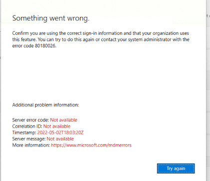
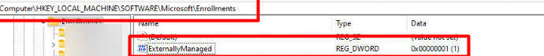

Error 80180026 is a common, confusing failure when you join a Windows device to Entra ID or enrol it in Intune. The message tells you nothing useful:

In my experience the cause is a leftover enrolment flag from earlier management, which makes Windows think the device is already managed by someone else.
Prerequisite
- Local administrator rights on the computer.
Fix
- Open Registry Editor and go to
Computer\HKEY_LOCAL_MACHINE\SOFTWARE\Microsoft\Enrollments. - Select Enrollments. In the right pane, double-click ExternallyManaged and change its value from
1to0.
ExternallyManaged set to 1 blocks enrolment - Restart the computer and enrol again.
The same change in PowerShell (run as administrator):
Set-ItemProperty -Path 'HKLM:\SOFTWARE\Microsoft\Enrollments' -Name 'ExternallyManaged' -Value 0
Restart-Computer